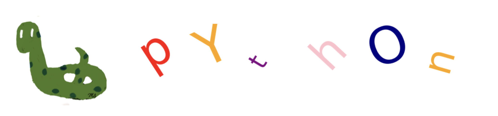

Python Introduction#

Python is one of the most commonly used programming languages.
It was created by Dutch programmer Guido van Rossum in the late 1980s.
He named it Python inspired by the BBC show Monty Python’s Flying Circus.
Python has become the primary programming language for numerous data science applications.
Advantages#
Beginner-friendly: Python’s syntax is simple and easy to read and write.
Example: Utilizing indentation (spaces) instead of parentheses results in clean code.
The following two code checks whether the integer 15 is an even or odd number.
Even if you do not understand what these two pieces of code are doing, you can see that Python has a simpler syntax.
Example: No need to declare a variable and its type before using it.
In Java, you need to specify that age is an integer, name is a character (similar to a string in Python), game_over is a boolean, and weight is a float. There is no such requirement in Python because Python can understand the type from the value.
Python |
Java |
|---|---|
age=25 |
int age =25; |
name = ‘mike’ |
String name = “mike”; |
game_over=True |
boolean game_over=true; |
weight=120.75 |
float weight=120.75f; |
Free and open source: Python is freely usable and distributable, including commercial purposes.
You can freely download and install it to your computer.
Online editors are also available for use without any installation.
Python packages are developed by major companies and shared for everyone’s use.
Tensorflow was developed by Google.
Pytorch was developed by Facebook.
General-purpose programming language: You can write code for different purposes.
Write game code
Develop programs for stores
Perform visualizations
Build predictive models
Rich Libraries: Python has rich collection of libraries encompassing of tools for various fields.
Numpy: for scientific computing
Statistics: offers statistics tools
Pandas: for data wrangling and analysis
Matplotlib: for visualization
Keras: for constructing neural network models
Django: for develop websites
Flask: for online applications
Scikit-learn: for predictive data analysis
Object oriented: Build on the concept of objects.
Utilizes simple and reusable parts like blueprints
Short code may encompass many hidden functionalities
Community Support: Python has a vast and active community that can provide assistance.
You can find answers to your questions on platfoms like stackoverflow.
Extensive resources available on platforms like linkedin
Portability: Python code can be run on other platforms with little to no modifications.
Works on virtual platforms
Windows, Unix, Linux, macOS
Python code can be combined with components written in other languages like C++, Java.
Python can be seen as a combination of general-purpose languages (such as C++ and Java) and domain-specific languages (like Matlab).
Disadvantages#
Python code is visible to anyone using the application, allowing for code to be copied or modified.
The execution speed of Python is slower compared to languages like C++. This is mainly due to the use of an interpreter instead of a compiler.
The interpreter translates Python code into machine code, enabling the computer to understand and execute the code
While a compiler translates the entire source code in a single run, an interpreter processes the source code line by line.
To understand the difference between interpreters and compilers, you can watch the following video.
from IPython.lib.display import YouTubeVideo
YouTubeVideo('_C5AHaS1mOA', width=500, height=300)
Installing Python#
It is easier to install Python with Anaconda
Anaconda is a free and open-source distribution of the Python.
It installs Python.
It simplifies package management and deployment by providing a comprehensive collection of tools and libraries pre-installed.
It comes with over 250 packages automatically installed.
It includes popular Python packages like NumPy, Pandas, Matplotlib, SciPy.
Integrated development environment (IDE)#
IDE provides tools to write codes in a better, easier, and faster way.
IDE includes:
Code editor
Debugger
Code highlighting
Auto completion
Project Management
Examples :
Jupyter Notebook#
Jupyter Notebook allows writing or running code in a web browser.
It is a web-based interactive development environment.
It does not require internet access.
It is free and comes with Anaconda.
Google Colab#
Short for Google Colaboratory.
An online tool for writing and running code.
A cloud-based computational environment or notebook.
Recommended for beginners since there’s no need to install any software.
Files are automatically saved to Google Drive.
As it is cloud-based, it requires an internet connection.
Colab notebooks are Jupyter notebooks that are hosted by Colab.
Applications#
The following examples demonstrate what can be accomplished with Python.
The aim of this section is to provide you with an idea of Python’s capabilities.
You’re not expected to comprehend the code at this stage.
Import Stock Data#
You can import historical stock data from Yahoo Finance.
The following represents data for Apple Stocks.
import yfinance
df = yfinance.Ticker('AAPL').history()
df.head().round(2)
| Open | High | Low | Close | Volume | Dividends | Stock Splits | |
|---|---|---|---|---|---|---|---|
| Date | |||||||
| 2024-05-06 00:00:00-04:00 | 182.10 | 183.95 | 180.18 | 181.46 | 78569700 | 0.00 | 0.0 |
| 2024-05-07 00:00:00-04:00 | 183.20 | 184.65 | 181.07 | 182.15 | 77305800 | 0.00 | 0.0 |
| 2024-05-08 00:00:00-04:00 | 182.60 | 182.82 | 181.20 | 182.49 | 45057100 | 0.00 | 0.0 |
| 2024-05-09 00:00:00-04:00 | 182.31 | 184.41 | 181.86 | 184.32 | 48983000 | 0.00 | 0.0 |
| 2024-05-10 00:00:00-04:00 | 184.90 | 185.09 | 182.13 | 183.05 | 50759500 | 0.25 | 0.0 |
Import Data from Wikipedia#
You can import tables from Wikipedia websites.
The following is the table of SP500 companies in the website https://en.wikipedia.org/wiki/List_of_S%26P_500_companies
import pandas as pd
pd.read_html('https://en.wikipedia.org/wiki/List_of_S%26P_500_companies')[0].head()
| Symbol | Security | GICS Sector | GICS Sub-Industry | Headquarters Location | Date added | CIK | Founded | |
|---|---|---|---|---|---|---|---|---|
| 0 | MMM | 3M | Industrials | Industrial Conglomerates | Saint Paul, Minnesota | 1957-03-04 | 66740 | 1902 |
| 1 | AOS | A. O. Smith | Industrials | Building Products | Milwaukee, Wisconsin | 2017-07-26 | 91142 | 1916 |
| 2 | ABT | Abbott | Health Care | Health Care Equipment | North Chicago, Illinois | 1957-03-04 | 1800 | 1888 |
| 3 | ABBV | AbbVie | Health Care | Biotechnology | North Chicago, Illinois | 2012-12-31 | 1551152 | 2013 (1888) |
| 4 | ACN | Accenture | Information Technology | IT Consulting & Other Services | Dublin, Ireland | 2011-07-06 | 1467373 | 1989 |
Scatter Plot#
import matplotlib.pyplot as plt
plt.figure(figsize=(10,5))
plt.scatter(df.index, df.Close, color='r')
plt.xticks(rotation=30);

Line Plot#
plt.figure(figsize=(10,5))
plt.plot(df.index, df.Close, color='r')
plt.xticks(rotation=30);

Histogram#
plt.figure(figsize=(10,3))
plt.hist(df.Close, bins=20, color='orange', orientation='horizontal');

Pie Chart#
number = [53, 122, 96, 239]
color_list = ['y', 'purple', 'g', 'r']
coins = ['Penny', 'Nickel', 'Dime', 'Quarter']
plt.pie(number, colors = color_list, autopct='%1.1f%%', labels = coins, radius=0.75);

Multiple Plots#
plt.figure(figsize = (20, 10))
color_set = ['r--', 'g--', 'b--', 'o--']
for i in range(1,5):
plt.subplot(2, 2, i)
plt.plot(df.iloc[:,i-1], color_set[i-1]);
plt.ylabel(df.columns[i-1],fontsize=15)
plt.xticks(rotation=30)
plt.grid()